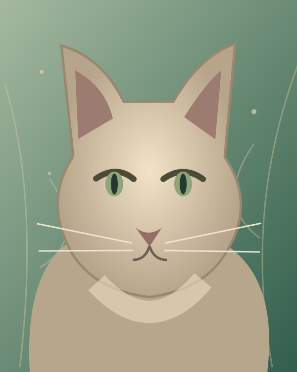

INDIVIDUAL MEMBERSHIP ✧
€20 / membership
For one cat enthusiast ready to join our club.
Enquire About Membership ↗A warm welcome to our TICA cat club, bringing together cat lovers, exhibitors and breeders from Ireland and beyond.

THE MAGIC IS IN THE WHISKERSShamrock Whiskers is a welcoming Irish cat club celebrating the beauty, character and companionship of cats. We're building a community where experienced exhibitors, new cat owners and curious visitors can come together.
Through our shows and club activities, we hope to share knowledge, make lasting friendships and celebrate cats of every kind.
Learn more about TICA ↗Two days of fabulous felines, friendly faces and a little Irish magic.
Moate Sports & Recreation Centre
Ireland
Pamela Barrett and Veronica Knight are among our planned judges. Further show details to follow.
Exhibitors, cat enthusiasts, families and visitors — we'd love to see you there.
Show schedule, entry link, admission prices and final judging panel will be published once confirmed. The TICA link above leads to the official organisation website, not directly to our event listing.
Be part of our growing cat-loving community.
For one cat enthusiast ready to join our club.
Enquire About Membership ↗For two members joining together as a family.
Enquire About Membership ↗Membership applications are currently handled by email. We'll share payment details and next steps when you contact us.
From ring sponsorship to raffle prizes and event support, we'd love to partner with businesses and individuals who share our passion for cats and community.
Become a Sponsor ↗Ask us about sponsorship opportunities and recognition on our website and at the show.
We're delighted to begin this journey and look forward to welcoming everyone to our first show in Moate in March 2027. Follow along as we share more details.
Questions about membership, exhibiting, visiting or sponsoring? Drop us a line.
info.shamrockwhiskers@gmail.com ↗